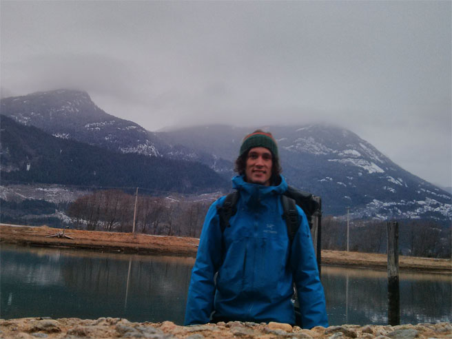
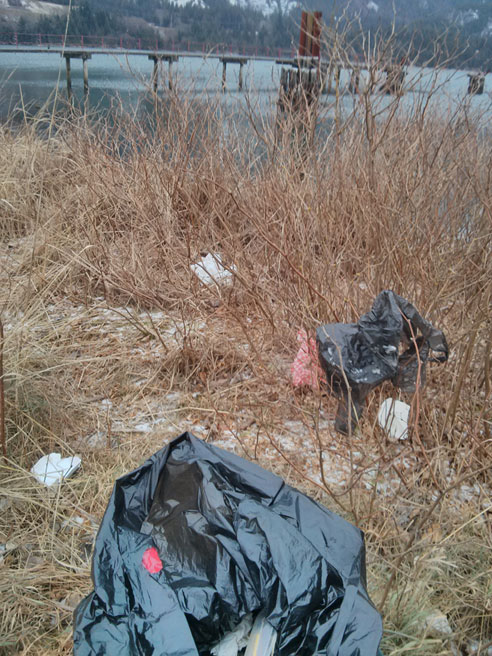
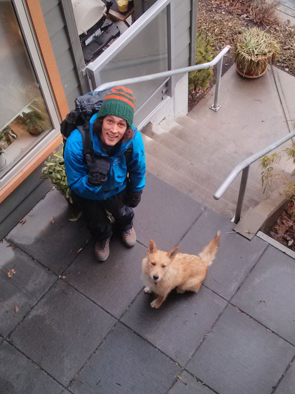
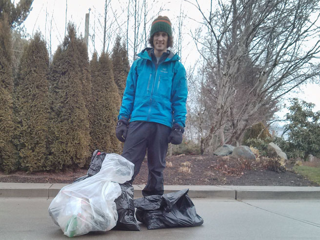
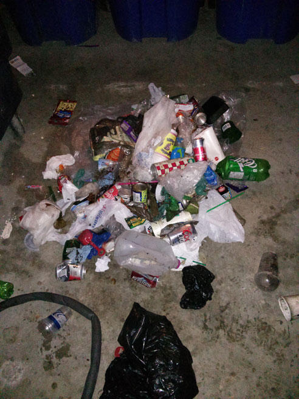

2013 | 2014
For 3 days on December 2013, I cleaned plastic and trash off of the Waterways in Squamish. It’s part of my company, Salesforce’s volunteering effort.

I started at Nexen beach, combing the coastline for anything that might float into the ocean.

It's crucial from letting this trash get blown into the waterways and end up floating in the middle of the Pacific Ocean, in the Great Garbage Patch

The following day I had my helper Mr. Fox with me.

The result of cleaning the Nexen beach area, the Mamquam and Squamish rivers, and the Howe Sound coast.

Sorting the catch for recycling.
Overall this was a great project. It's great to make our community cleaner, and to prevent all this trash from going in the ocean. Squamish already does a really great job, shown by the fact that only 3 bags were collected.